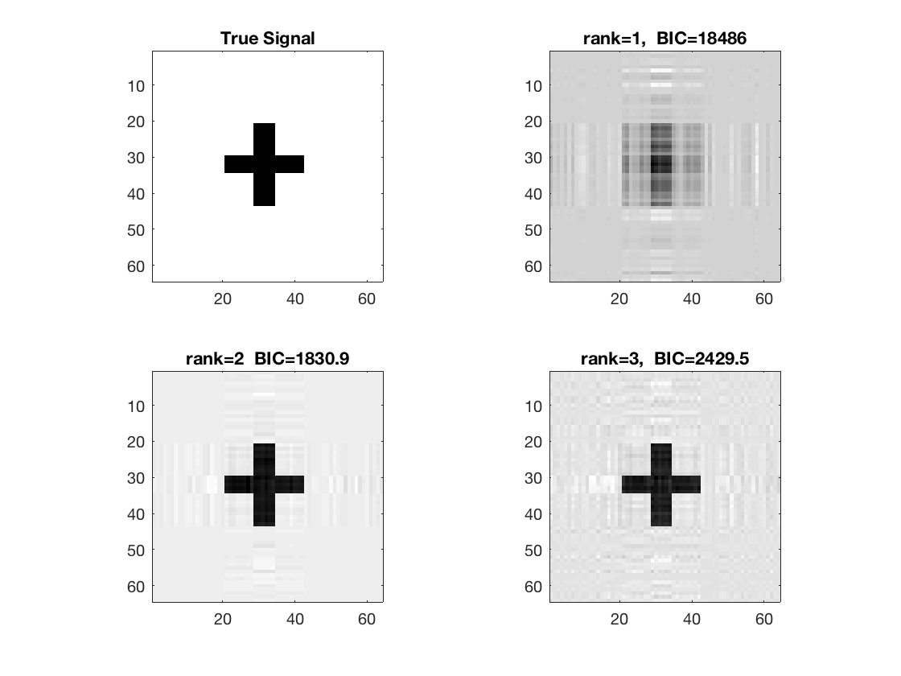
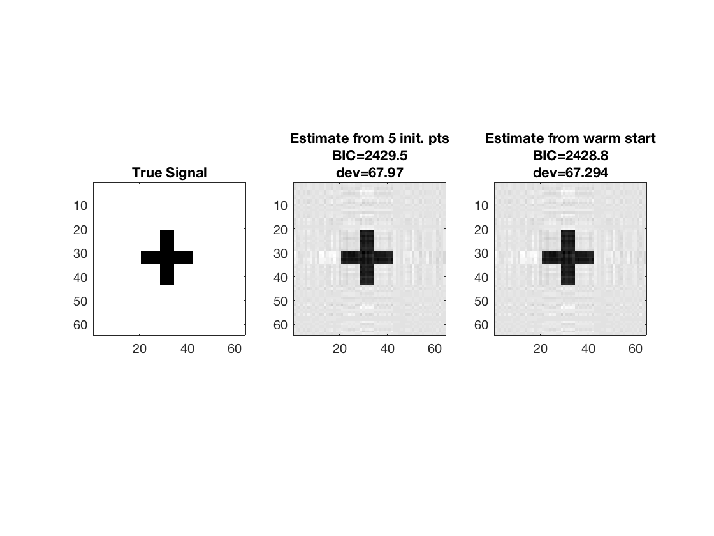
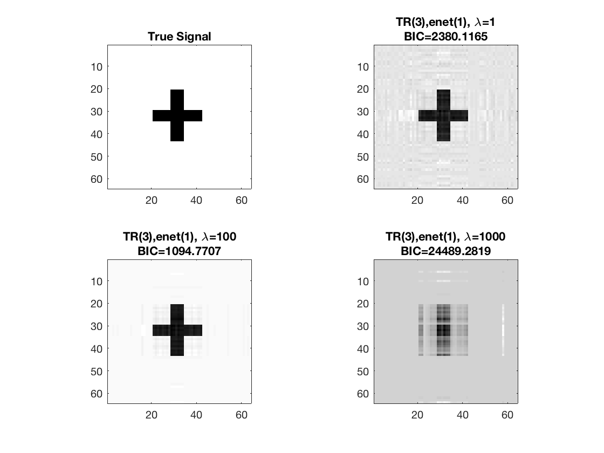
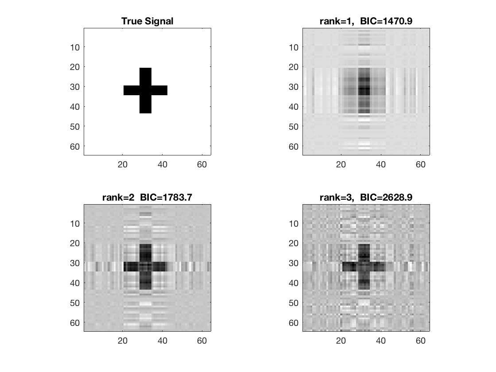
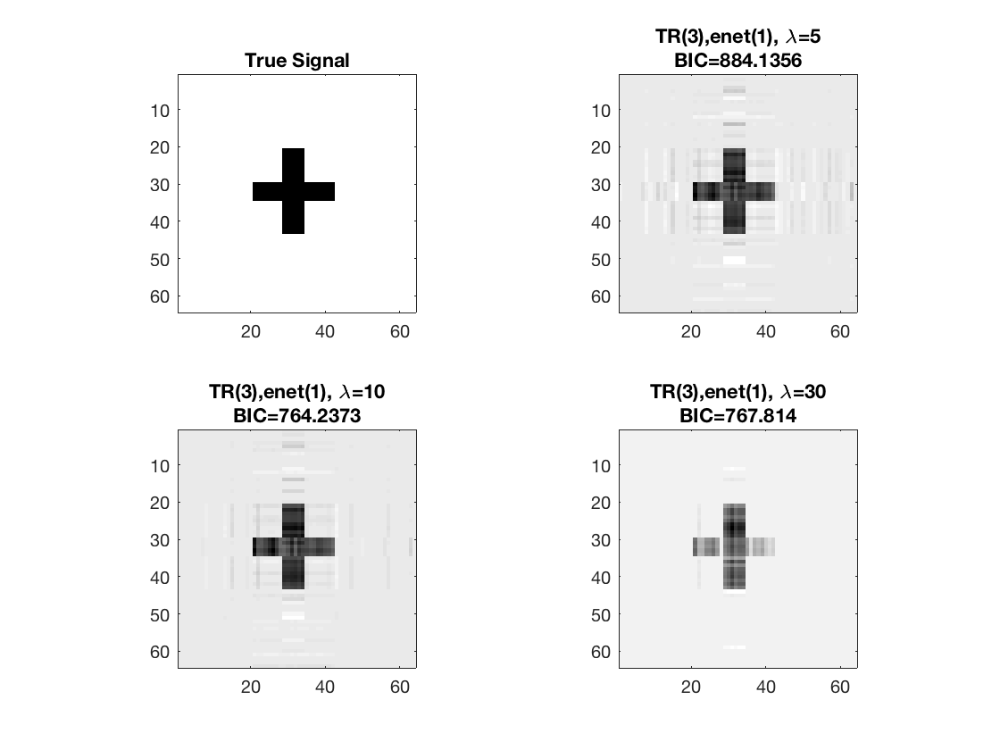
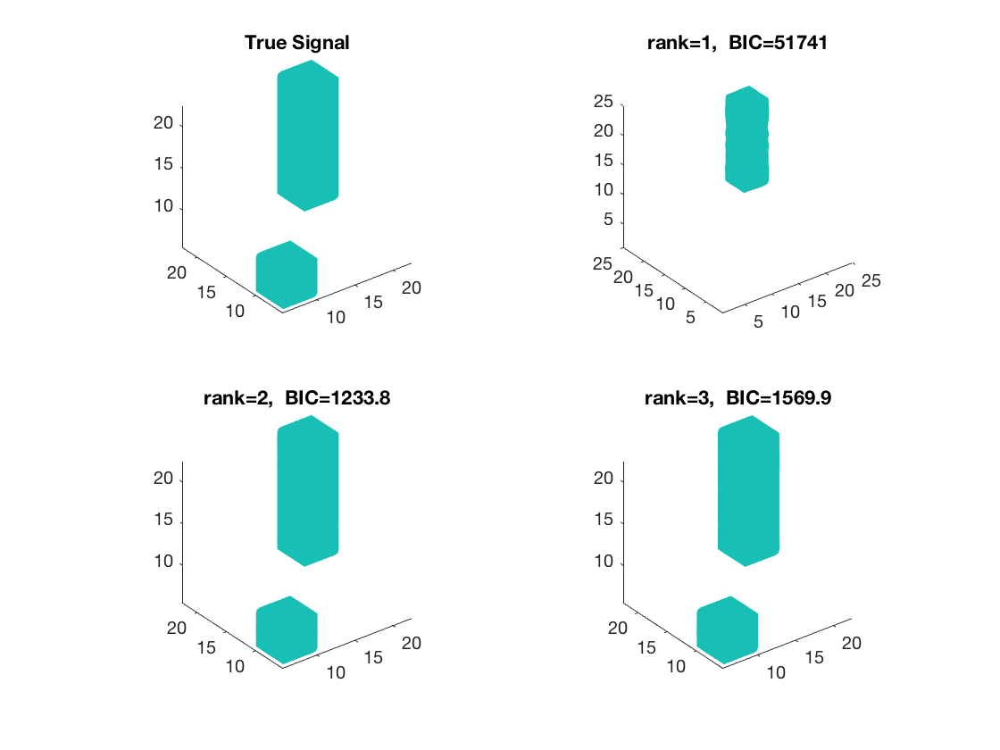
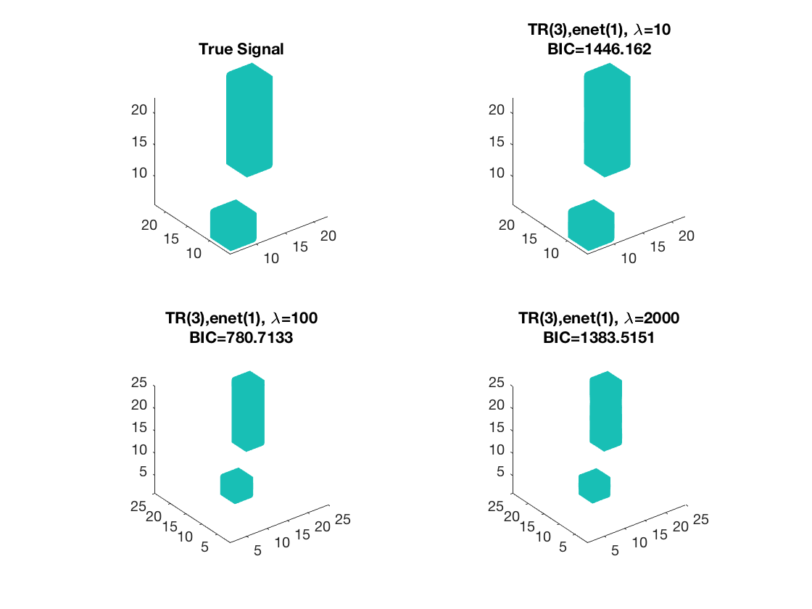

Contents
- Kruskal linear regression, 2D covariates
- Warm starting from coarsened estimate
- Sparse Kruskal linear regression, 2D covariates
- Kruskal logistic regression, 2D covariates
- Sparse Kruskal logistic regression, 2D covariates
- Kruskal linear regression, 3D covariates
- Sparse Kruskal linear regression, 3D covariates
Kruskal linear regression, 2D covariates
clear; % reset random seed s = RandStream('mt19937ar','Seed',2); RandStream.setGlobalStream(s);
2D true signal: 64-by-64 cross
shape = imread('cross.gif'); shape = array_resize(shape,[32,32]); % 32-by-32 b = zeros(2*size(shape)); b((size(b,1)/4):(size(b,1)/4)+size(shape,1)-1, ... (size(b,2)/4):(size(b,2)/4)+size(shape,2)-1) = shape; [p1,p2] = size(b); disp(size(b));
64 64
True coefficients for regular (non-array) covariates
p0 = 5; b0 = ones(p0,1);
Simulate covariates
n = 500; % sample size X = randn(n,p0); % n-by-p0 regular design matrix M = tensor(randn(p1,p2,n)); % p1-by-p2-by-n matrix variates disp(size(M));
64 64 500
Simulate responses
mu = X*b0 + double(ttt(tensor(b), M, 1:2));
sigma = 1; % noise level
y = mu + sigma*randn(n,1);
Estimate using Kruskal linear regression - rank 1
tic; disp('rank 1'); [~,beta_rk1,glmstats1] = kruskal_reg(X,M,y,1,'normal'); toc; disp(glmstats1{end});
rank 1
Elapsed time is 0.921648 seconds.
beta: [6×1 double]
dfe: 494
sfit: 5.9801
s: 5.9801
estdisp: 1
covb: [6×6 double]
se: [6×1 double]
coeffcorr: [6×6 double]
t: [6×1 double]
p: [6×1 double]
resid: [500×1 double]
residp: [500×1 double]
residd: [500×1 double]
resida: [500×1 double]
BIC: 1.8486e+04
yhat: [500×1 double]
Estimate using Kruskal linear regression - rank 2
tic; disp('rank 2'); [~,beta_rk2,glmstats2] = kruskal_reg(X,M,y,2,'normal'); toc; disp(glmstats2{end});
rank 2
Elapsed time is 2.010375 seconds.
beta: [6×1 double]
dfe: 494
sfit: 0.6878
s: 0.6878
estdisp: 1
covb: [6×6 double]
se: [6×1 double]
coeffcorr: [6×6 double]
t: [6×1 double]
p: [6×1 double]
resid: [500×1 double]
residp: [500×1 double]
residd: [500×1 double]
resida: [500×1 double]
BIC: 1.8309e+03
yhat: [500×1 double]
Estimate using Kruskal linear regression - rank 3
tic; disp('rank 3'); [~,beta_rk3,glmstats3,dev3] = kruskal_reg(X,M,y,3,'normal'); toc; disp(glmstats3{end});
rank 3
Elapsed time is 10.103692 seconds.
beta: [6×1 double]
dfe: 494
sfit: 0.3709
s: 0.3709
estdisp: 1
covb: [6×6 double]
se: [6×1 double]
coeffcorr: [6×6 double]
t: [6×1 double]
p: [6×1 double]
resid: [500×1 double]
residp: [500×1 double]
residd: [500×1 double]
resida: [500×1 double]
BIC: 2.4295e+03
yhat: [500×1 double]
disp true and recovered signals
figure; hold on; set(gca,'FontSize',20); subplot(2,2,1); imagesc(-b); colormap(gray); title('True Signal'); axis equal; axis tight; subplot(2,2,2); imagesc(-double(beta_rk1)); colormap(gray); title({['rank=1, ', ' BIC=',num2str(glmstats1{end}.BIC,5)]}); axis equal; axis tight; subplot(2,2,3); imagesc(-double(beta_rk2)); colormap(gray); title({['rank=2 ', ' BIC=',num2str(glmstats2{end}.BIC,5)]}); axis equal; axis tight; subplot(2,2,4); imagesc(-double(beta_rk3)); colormap(gray); title({['rank=3, ', ' BIC=',num2str(glmstats3{end}.BIC,5)]}); axis equal; axis tight;
Warm starting from coarsened estimate
% Reduce array covariates to smaller size and fit rank-3 model tic; M_small = array_resize(M, [16 16 size(M,3)]); [~,beta_small] = kruskal_reg(X,M_small,y,3,'normal'); disp(size(beta_small));
16 16
Use reduced-sized estimate as initial point
[~,beta_ws,glmstats_ws,dev_ws] = kruskal_reg(X,M,y,3,'normal', ... 'B0',array_resize(beta_small,[p1 p2])); toc; disp(size(beta_ws));
Elapsed time is 2.727487 seconds.
64 64
Compare estimate using warm start and previous estimate (5 random initial points); note the smaller deviance and BIC from warm start
disp([dev3 dev_ws]);
disp([glmstats3{end}.BIC glmstats_ws{end}.BIC]);
% disp true and recovered signals
figure; hold on;
set(gca,'FontSize',20);
subplot(1,3,1);
imagesc(-b);
colormap(gray);
title('True Signal');
axis equal;
axis tight;
subplot(1,3,2);
imagesc(-double(beta_rk3));
colormap(gray);
title({'Estimate from 5 init. pts'; ...
['BIC=',num2str(glmstats3{end}.BIC,5)]; ...
['dev=',num2str(dev3,5)]});
axis equal;
axis tight;
subplot(1,3,3);
imagesc(-double(beta_rk3));
colormap(gray);
title({'Estimate from warm start'; ...
['BIC=',num2str(glmstats_ws{end}.BIC,5)]; ...
['dev=',num2str(dev_ws,5)]});
axis equal;
axis tight;
67.9696 67.2942
1.0e+03 *
2.4295 2.4288
 Sparse Kruskal linear regression, 2D covariates
% Set lasso penalty and tuning parameter values pentype = 'enet'; penparam = 1; lambda = [1,100,1000];
Estimate using Kruskal sparse linear regression - lambda 1 Warm start from rank 3 estimate
tic; disp(['lambda=', num2str(lambda(1))]); [~,beta_rk1,~,glmstat_rk1] = kruskal_sparsereg(X,M,y,3,'normal',... lambda(1),pentype,penparam,'B0',beta_rk3); toc;
lambda=1 Elapsed time is 0.210845 seconds.
Estimate using Kruskal sparse linear regression - lambda 2 Warm start from rank 3 estimate
tic; disp(['lambda=', num2str(lambda(2))]); [~,beta_rk2,~,glmstat_rk2] = kruskal_sparsereg(X,M,y,3,'normal',... lambda(2),pentype,penparam,'B0',beta_rk3); toc;
lambda=100 Elapsed time is 0.288776 seconds.
Estimate using Kruskal sparse linear regression - lambda 3 Warm start from rank 3 estimate
tic; disp(['lambda=', num2str(lambda(3))]); [~,beta_rk3,~,glmstat_rk3] = kruskal_sparsereg(X,M,y,3,'normal',... lambda(3),pentype,penparam,'B0',beta_rk3); toc;
lambda=1000 Elapsed time is 0.120612 seconds.
disp true and recovered signals
figure; hold on; set(gca,'FontSize',20); subplot(2,2,1); imagesc(-b); colormap(gray); title('True Signal'); axis equal; axis tight; subplot(2,2,2); imagesc(-double(beta_rk1)); colormap(gray); title({['TR(3),' pentype '(' num2str(penparam), '), \lambda=', ... num2str(lambda(1))];... ['BIC=', num2str(glmstat_rk1{end}.BIC)]}); axis equal; axis tight; subplot(2,2,3); imagesc(-double(beta_rk2)); colormap(gray); title({['TR(3),' pentype '(' num2str(penparam), '), \lambda=', ... num2str(lambda(2))];... ['BIC=', num2str(glmstat_rk2{end}.BIC)]}); axis equal; axis tight; subplot(2,2,4); imagesc(-double(beta_rk3)); colormap(gray); title({['TR(3),' pentype '(' num2str(penparam), '), \lambda=', ... num2str(lambda(3))];... ['BIC=', num2str(glmstat_rk3{end}.BIC)]}); axis equal; axis tight;
Kruskal logistic regression, 2D covariates
clear; % reset random seed s = RandStream('mt19937ar','Seed',2); RandStream.setGlobalStream(s);
True coefficients for regular covariates
p0 = 5; b0 = ones(p0,1);
2D true signal: 64-by-64 cross
shape = imread('cross.gif'); shape = array_resize(shape,[32,32]); % 32-by-32 b = zeros(2*size(shape)); b((size(b,1)/4):(size(b,1)/4)+size(shape,1)-1, ... (size(b,2)/4):(size(b,2)/4)+size(shape,2)-1) = shape; [p1,p2] = size(b); disp(size(b));
64 64
Simulate covariates
n = 1000; % sample size X = randn(n,p0); % n-by-p regular design matrix M = tensor(randn(p1,p2,n)); % p1-by-p2-by-n matrix variates disp(size(M));
64 64 1000
Simulate binary responses from the systematic components
mu = X*b0 + double(ttt(tensor(b), M, 1:2)); y = binornd(1, 1./(1+exp(-mu)));
Estimate using Kruskal logistic regression - rank 1
tic; disp('rank 1'); [beta0_rk1,beta_rk1,glmstats1,dev1] = kruskal_reg(X,M,y,1,'binomial'); toc;
rank 1 Elapsed time is 1.535537 seconds.
Estimate using Kruskal logistic regression - rank 2
tic; disp('rank 2'); % a rough estimate from reduced sized data M_reduce = array_resize(M, [16 16 size(M,3)]); [~,beta_rk2] = kruskal_reg(X,M_reduce,y,2,'binomial'); beta_rk2 = array_resize(beta_rk2, [64 64]); % warm start from coarsened estimate [beta0_rk2,beta_rk2,glmstats2,dev2] = kruskal_reg(X,M,y,2,'binomial', ... 'B0', beta_rk2); toc;
rank 2 Elapsed time is 3.304859 seconds.
Estimate using Kruskal logistic regression - rank 3
tic; disp('rank 3'); % a rough estimate from reduced sized data [~,beta_rk3] = kruskal_reg(X,M_reduce,y,3,'binomial'); beta_rk3 = array_resize(beta_rk3, [64 64]); % warm start from coarsened estimate [beta0_rk3,beta_rk3,glmstats3,dev3] = kruskal_reg(X,M,y,3,'binomial', ... 'B0', beta_rk3); toc;
rank 3 Elapsed time is 7.006506 seconds.
disp true and recovered signals
figure; hold on; set(gca,'FontSize',20); subplot(2,2,1); imagesc(-b); colormap(gray); title('True Signal'); axis equal; axis tight; subplot(2,2,2); imagesc(-double(beta_rk1)); colormap(gray); title({['rank=1, ', ' BIC=',num2str(glmstats1{end}.BIC,5)]}); axis equal; axis tight; subplot(2,2,3); imagesc(-double(beta_rk2)); colormap(gray); title({['rank=2 ', ' BIC=',num2str(glmstats2{end}.BIC,5)]}); axis equal; axis tight; subplot(2,2,4); imagesc(-double(beta_rk3)); colormap(gray); title({['rank=3, ', ' BIC=',num2str(glmstats3{end}.BIC,5)]}); axis equal; axis tight;
Sparse Kruskal logistic regression, 2D covariates
Set lasso penalty and tuning parameter values
pentype = 'enet';
penparam = 1;
lambda = [5,10,30];
Estimate using Kruskal sparse logistic regression - lambda 1 Warm start from rank 3 estimate
tic; disp(['lambda=', num2str(lambda(1))]); [~,beta_rk1,~,glmstat_rk1] = kruskal_sparsereg(X,M,y,3,'binomial',... lambda(1),pentype,penparam,'B0',beta_rk3); toc;
lambda=5 Elapsed time is 0.627160 seconds.
Estimate using Kruskal sparse logistic regression - lambda 2 Warm start from rank 3 estimate
tic; disp(['lambda=', num2str(lambda(2))]); [~,beta_rk2,~,glmstat_rk2] = kruskal_sparsereg(X,M,y,3,'binomial',... lambda(2),pentype,penparam,'B0',beta_rk3); toc;
lambda=10 Elapsed time is 0.480458 seconds.
Estimate using Kruskal sparse logistic regression - lambda 3 Warm start from rank 3 estimate
tic; disp(['lambda=', num2str(lambda(3))]); [~,beta_rk3,~,glmstat_rk3] = kruskal_sparsereg(X,M,y,3,'binomial',... lambda(3),pentype,penparam,'B0',beta_rk3); toc;
lambda=30 Elapsed time is 0.311066 seconds.
disp true and recovered signals
figure; hold on; set(gca,'FontSize',20); subplot(2,2,1); imagesc(-b); colormap(gray); title('True Signal'); axis equal; axis tight; subplot(2,2,2); imagesc(-double(beta_rk1)); colormap(gray); title({['TR(3),' pentype '(' num2str(penparam), '), \lambda=', ... num2str(lambda(1))];... ['BIC=', num2str(glmstat_rk1{end}.BIC)]}); axis equal; axis tight; subplot(2,2,3); imagesc(-double(beta_rk2)); colormap(gray); title({['TR(3),' pentype '(' num2str(penparam), '), \lambda=', ... num2str(lambda(2))];... ['BIC=', num2str(glmstat_rk2{end}.BIC)]}); axis equal; axis tight; subplot(2,2,4); imagesc(-double(beta_rk3)); colormap(gray); title({['TR(3),' pentype '(' num2str(penparam), '), \lambda=', ... num2str(lambda(3))];... ['BIC=', num2str(glmstat_rk3{end}.BIC)]}); axis equal; axis tight;
Kruskal linear regression, 3D covariates
clear; % reset random seed s = RandStream('mt19937ar','Seed',2); RandStream.setGlobalStream(s);
True 3D signal: 25-by-25-by-25 "two-cube"
b = zeros(25,25,25);
b(6:10,6:10,6:10) = 1;
b(18:22,18:22,8:22) = 1;
[p1, p2, p3] = size(b);
% true coefficients for regular covariates
p0 = 5;
b0 = ones(p0,1);
Simulate covariates
n = 500; % sample size X = randn(n,p0); % n-by-p regular design matrix M = tensor(randn(p1,p2,p3,n)); % p1-by-p2-by-p3 3D variates disp(size(M));
25 25 25 500
Simulate responses
mu = X*b0 + double(ttt(M,tensor(b),1:3));
sigma = 1; % noise level
y = mu + sigma*randn(n,1);
Estimate by Kruskal linear regression - rank 1
tic; disp('rank 1'); [~,beta_rk1,glmstats1] = kruskal_reg(X,M,y,1,'normal'); toc;
rank 1 Elapsed time is 2.916543 seconds.
Estimate by Kruskal linear regression - rank 2
tic; disp('rank 2'); % a rough estimate from reduced sized data M_reduce = array_resize(M, [10 10 10 size(M,4)]); [~,beta_rk2] = kruskal_reg(X,M_reduce,y,2,'normal'); beta_rk2 = array_resize(beta_rk2, [p1 p2 p3]); % warm start from coarsened estimate [~,beta_rk2,glmstats2] = kruskal_reg(X,M,y,2,'normal','B0',beta_rk2); toc;
rank 2 Elapsed time is 2.382836 seconds.
Estimate by Kruskal linear regression - rank 3
tic; disp('rank 3'); % a rough estimate from reduced sized data [~,beta_rk3] = kruskal_reg(X,M_reduce,y,3,'normal'); beta_rk3 = array_resize(beta_rk3, [p1 p2 p3]); % warm start from coarsened estimate [~,beta_rk3,glmstats3] = kruskal_reg(X,M,y,3,'normal','B0',beta_rk3); toc;
rank 3 Elapsed time is 3.368647 seconds.
disp true and recovered signals
figure; hold on; set(gca,'FontSize',20); subplot(2,2,1); view(3); isosurface(b,.5); xlim([1 p1]); ylim([1 p2]); zlim([1 p3]); title('True Signal'); axis equal; subplot(2,2,2); isosurface(double(beta_rk1),0.5); view(3); xlim([1 p1]); ylim([1 p2]); zlim([1 p3]); title({['rank=1, ', ' BIC=', num2str(glmstats1{end}.BIC,5)]}); daspect(daspect); subplot(2,2,3); view(3); isosurface(double(beta_rk2),0.5); xlim([1 p1]); ylim([1 p2]); zlim([1 p3]); title({['rank=2, ', ' BIC=', num2str(glmstats2{end}.BIC,5)]}); axis equal; subplot(2,2,4); view(3); isosurface(double(beta_rk3),0.5); xlim([1 p1]); ylim([1 p2]); zlim([1 p3]); title({['rank=3, ', ' BIC=', num2str(glmstats3{end}.BIC,5)]}); axis equal;
Sparse Kruskal linear regression, 3D covariates
Set lasso penalty and tuning parameter values
pentype = 'enet';
penparam = 1;
lambda = [10,100,2000];
Estimate using Kruskal sparse linear regression - lambda 1 Warm start from rank 3 estimate
tic; disp(['lambda=', num2str(lambda(1))]); [~,beta_rk1,~,glmstat_rk1] = kruskal_sparsereg(X,M,y,3,'normal',... lambda(1),pentype,penparam,'B0',beta_rk3); toc;
lambda=10 Elapsed time is 0.546141 seconds.
Estimate using Kruskal sparse linear regression - lambda 2 Warm start from rank 3 estimate
tic; disp(['lambda=', num2str(lambda(2))]); [~,beta_rk2,~,glmstat_rk2] = kruskal_sparsereg(X,M,y,3,'normal',... lambda(2),pentype,penparam,'B0',beta_rk3); toc;
lambda=100 Elapsed time is 0.389247 seconds.
Estimate using Kruskal sparse linear regression - lambda 3 Warm start from rank 3 estimate
tic; disp(['lambda=', num2str(lambda(3))]); [~,beta_rk3,~,glmstat_rk3] = kruskal_sparsereg(X,M,y,3,'normal',... lambda(3),pentype,penparam,'B0',beta_rk3); toc;
lambda=2000 Elapsed time is 0.368513 seconds.
disp true and recovered signals
figure; hold on; set(gca,'FontSize',20); subplot(2,2,1); view(3); isosurface(b,.5); xlim([1 p1]); ylim([1 p2]); zlim([1 p3]); title('True Signal'); axis equal; subplot(2,2,2); isosurface(double(beta_rk1),0.5); view(3); xlim([1 p1]); ylim([1 p2]); zlim([1 p3]); daspect(daspect); title({['TR(3),' pentype '(' num2str(penparam), '), \lambda=', ... num2str(lambda(1))];... ['BIC=', num2str(glmstat_rk1{end}.BIC)]}); axis equal; subplot(2,2,3); view(3); isosurface(double(beta_rk2),0.5); xlim([1 p1]); ylim([1 p2]); zlim([1 p3]); title({['TR(3),' pentype '(' num2str(penparam), '), \lambda=', ... num2str(lambda(2))];... ['BIC=', num2str(glmstat_rk2{end}.BIC)]}); daspect(daspect); subplot(2,2,4); view(3); isosurface(double(beta_rk3),0.5); xlim([1 p1]); ylim([1 p2]); zlim([1 p3]); title({['TR(3),' pentype '(' num2str(penparam), '), \lambda=', ... num2str(lambda(3))];... ['BIC=', num2str(glmstat_rk3{end}.BIC)]}); daspect(daspect);